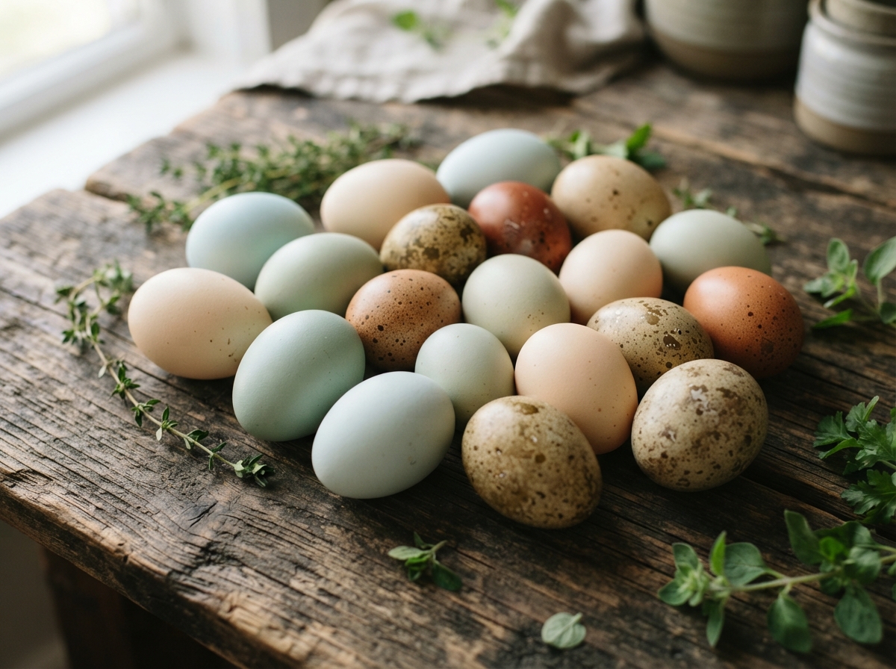
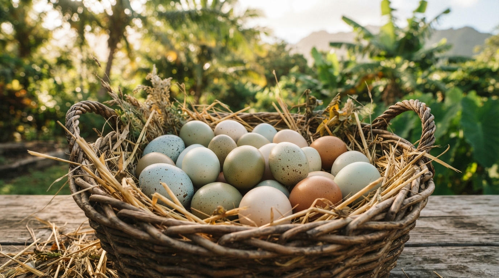
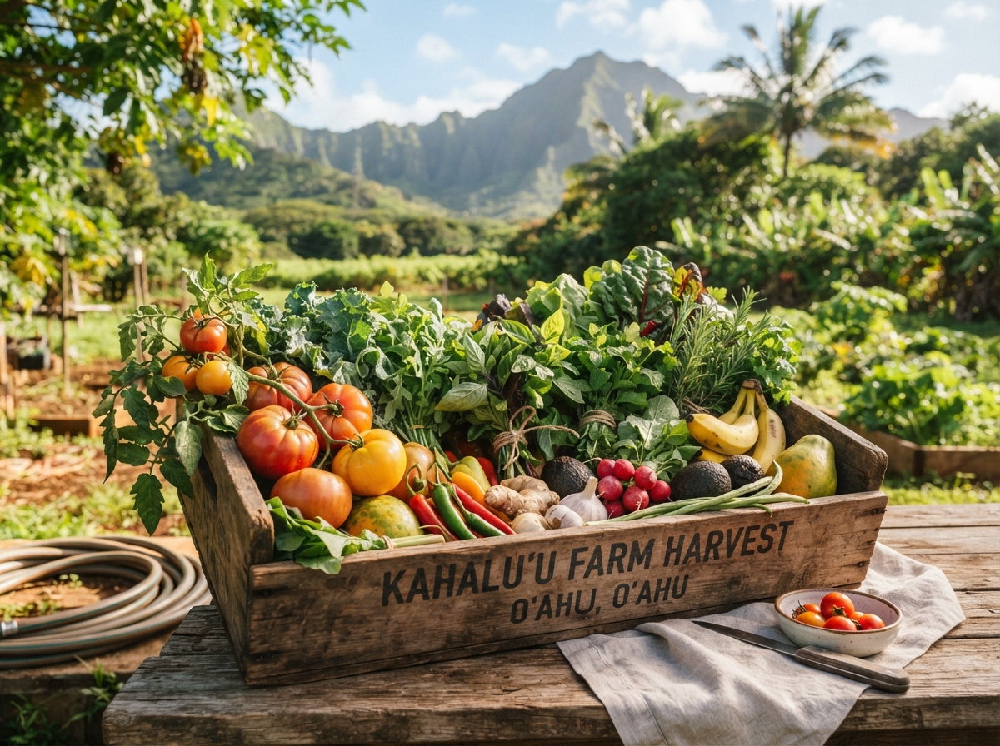
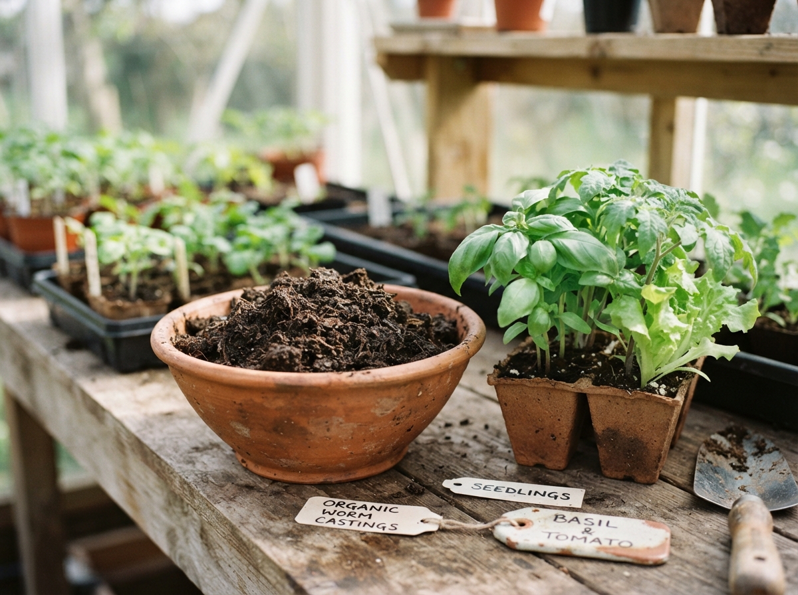
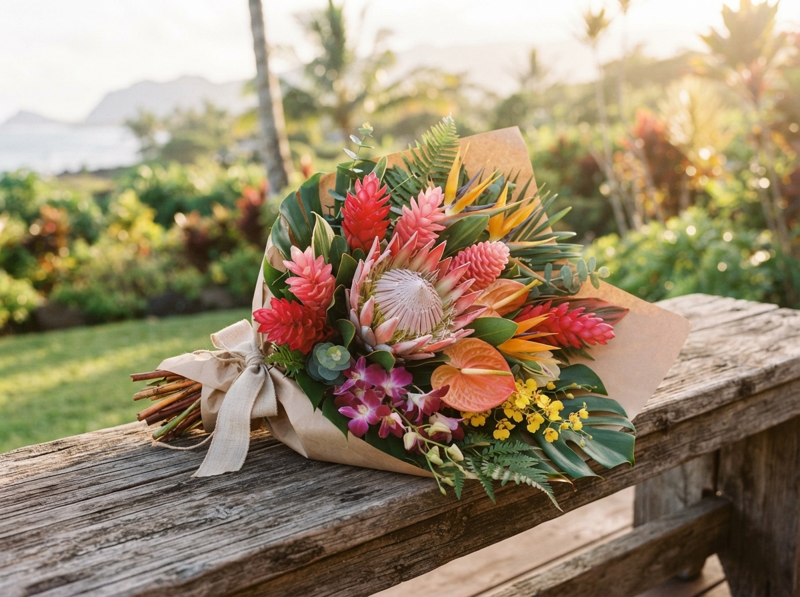
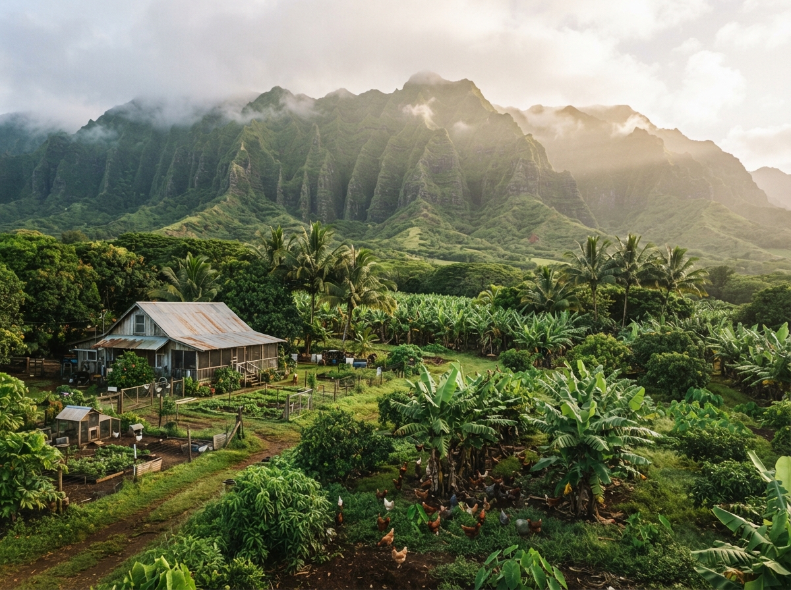
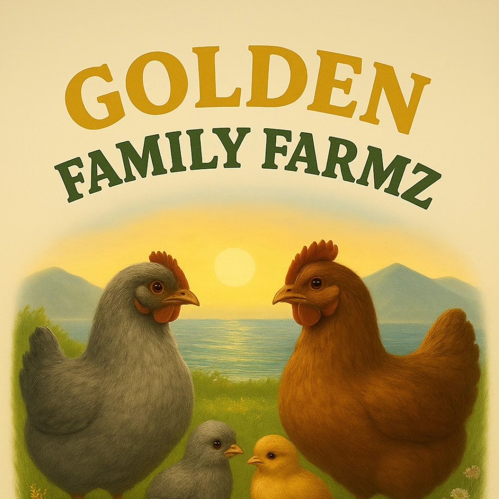
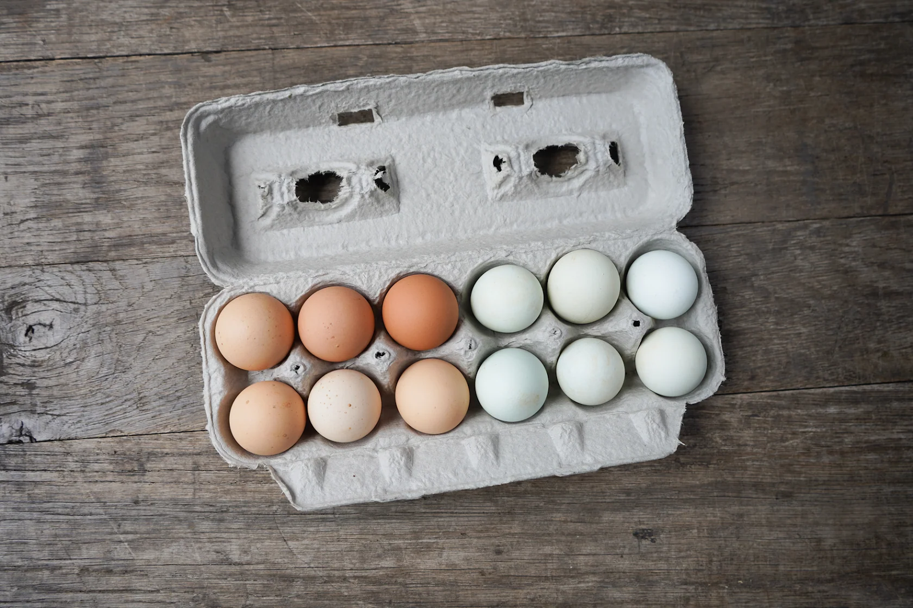

Rooted on Oʻahu
Under the mist of the Koʻolau mountains, Kahaluʻu’s windward rain and rich volcanic soil shape everything we grow.
Locally rooted in Kahaluʻu, Oʻahu, Hawaiʻi
From our family farm in Kahaluʻu to your table, discover hand-gathered pasture-raised eggs and seasonal farm treasures grown with care on Oʻahu.

Nurtured with Mālama
Every morning begins with caring for our animals, nourishing the soil, and honoring the windward microclimate.
Under the mist of the Koʻolau mountains, Kahaluʻu’s windward rain and rich volcanic soil shape everything we grow.
Collected by hand in small batches each day for exceptional freshness, vibrant yolks, and natural variety.
Our hens enjoy open pasture, Hawaiian sunshine, natural foraging, and space to live well.
From soil-nourishing worm castings to tropical produce and fresh flowers, we share what the ʻāina provides.
Grown & gathered on Oʻahu
Small-batch and nurtured with deep respect for the ʻāina. Ask us what’s available for the coming harvest week.

Daily harvestPasture-raised
A colorful mix of naturally blue, green, and rich brown heirloom shells, gathered fresh on Oʻahu.
Ask about egg availability
In seasonIsland grown
Fresh harvests that celebrate the flavors of Hawaiʻi, grown with care and without synthetic pesticides.
Explore seasonal produce
Soil foodGarden nourishment
A natural soil amendment to nourish garden beds, support root development, and help plants thrive.
Ask about worm castings
Fresh cutGathered with care
Fresh arrangements inspired by the season, featuring island ginger, tropical blooms, and lush greens.
Inquire about bouquets
Windward Oʻahu · Kahaluʻu ValleyOur heritage
Golden Family Farmz is a local farm in Kahaluʻu, Oʻahu, founded by former University of Hawaiʻi football players Channon Harris and Ashley Lelie.
Today, the farm brings together a love for the land, hands-on farming, and a commitment to sharing fresh, thoughtfully raised farm products with the local community.
From colorful eggs to seasonal produce, worm castings, and fresh bouquets, we celebrate the simple things that connect us to the ʻāina and to one another.
Hawaiian farm to table
Gathering ingredients, tending your garden, or bringing fresh flowers home? We’d love to share a little of what our farm has to offer.
Connect with the farm
Community roots
Based in beautiful Kahaluʻu, Golden Family Farmz is proud to be part of Hawaiʻi’s local farming community. We’re passionate about sharing our farm’s offerings with people who value fresh, locally sourced products.
Community careSupporting neighbors, island food resilience, and family-first access.
Aloha for the ʻāinaThoughtful flock rotation and natural soil restoration.
Transparent farmingDirect connections between growers and local families.

“Growing with respect for the island that raised us.”— Channon & Ashley
Small-batch harvest
Interested in eggs, seasonal produce, worm castings, or a fresh bouquet? Reach out to learn what’s available for the upcoming harvest week.